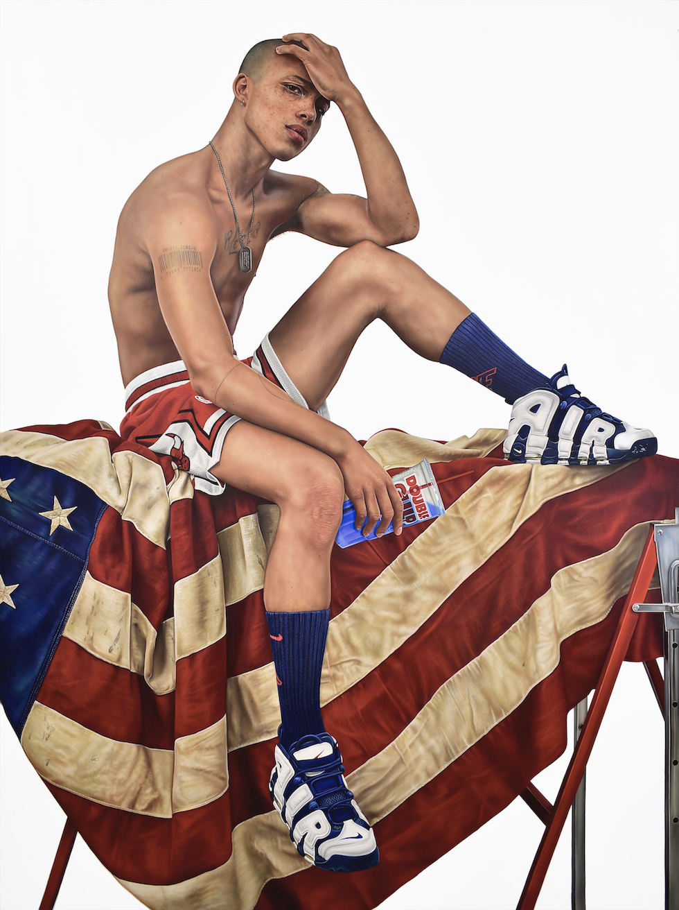

The Future Is Old
Massa-executies / Individualistische onverschilligheid / Geïnstitutionaliseerd racisme / Sociaal determinisme / Ongelijke kansen / Voortdurend bedreigde burgerrechten (…)
Is de huidige toestand van de vervlogen Amerikaanse droom een voorbeeld van de kant waarop vandaag de dag al te veel van onze democratieën heen gaan? En nog veel meer in de zeer nabije toekomst? Herhaalt de geschiedenis zich? Of zal de jeugd opstaan en nee zeggen tegen een toekomst die nu al oud lijkt?
Jeugdige portretten trekken bezoekers aan met hun schoonheid en de voorstelling van een mooie toekomst. Bij een nadere beschouwing onthullen snijwonden en blauwe plekken echter een donkerder kant van de realiteit. THE KID gebruikt kunst als een middel om ons vraagtekens te laten zetten bij de begrippen macht en privilege en meer in het algemeen bij de huidige ontwikkeling van humanisme in onze democratische maatschappijen.
Tickets for THE KID!THE KID
Hyperrealistische, meer dan levensgrote portretten en levensgrote sculpturen van THE KID confronteren het publiek met diep persoonlijke verhalen die de onrechtvaardigheid van vandaag de dag in Amerika en daarbuiten in vele democratieën overal ter wereld blootleggen en ons kritisch laten kijken naar de huidige evolutie van de geschiedenis van de mens. De sociaalkritische tentoonstelling wil onze geesten openen met als uiteindelijk doel inzicht te geven in een wereld met meer mededogen en begrip.
THE KID onderzoekt hoe de recente en huidige sociale en politieke
geschiedenis zich in te veel landen lijkt te herhalen en welke positie
de jeugd van vandaag zal besluiten in te nemen, met Martin Luther King
en de woorden van zijn vrouw, de beroemde burgerrechtenactiviste
Coretta Scott King: “Vrijheid wordt nooit echt gewonnen, je verdient en wint haar in iedere generatie”,
als inspiratiebron.
“Freedom is never really won, you earn it and win it in every generation!” – Coretta Scott King
An American Pastoral. THE KID, 2018-2019. Oil painting and egg tempera on canvas. 281 x 213 x 6 cm. Photo courtesy Studio THE KID ©THE KID-All rights reserved.
Over de hedendaagse kunstenaar THE KID
THE KID, die reeds internationaal bekend staat om zijn tot nadenken
stemmende en sociaal geëngageerde oeuvre aan kunstwerken, is een
wereldburger pur sang en een autodidacte multidisciplinaire hedendaagse
kunstenaar, die traditionele technieken van de oude Europese meesters – tekenen, schilderen en beeldhouwen – kaapt om kanttekeningen te plaatsen bij de sociale kwesties waarmee de jeugd vandaag de dag – en in nog grotere mate morgen – in
onze gepolariseerde wereld van de 21e eeuw wordt geconfronteerd, zoals het sociale determinisme, de voortdurend bedreigde burgerrechten, de ongelijke kansen of de dunne scheidslijn tussen onschuld en corruptie voor de jeugd van vandaag.
Wanneer hem naar zijn werk wordt gevraagd, onderstreept THE KID zijn uitzonderlijke
oeuvre graag met de befaamde woorden van de grote 20e-eeuwse meester
Picasso: Kunst is niet gemaakt om appartementen mee te versieren,
het is een offensief en defensief oorlogswapen tegen de vijand.